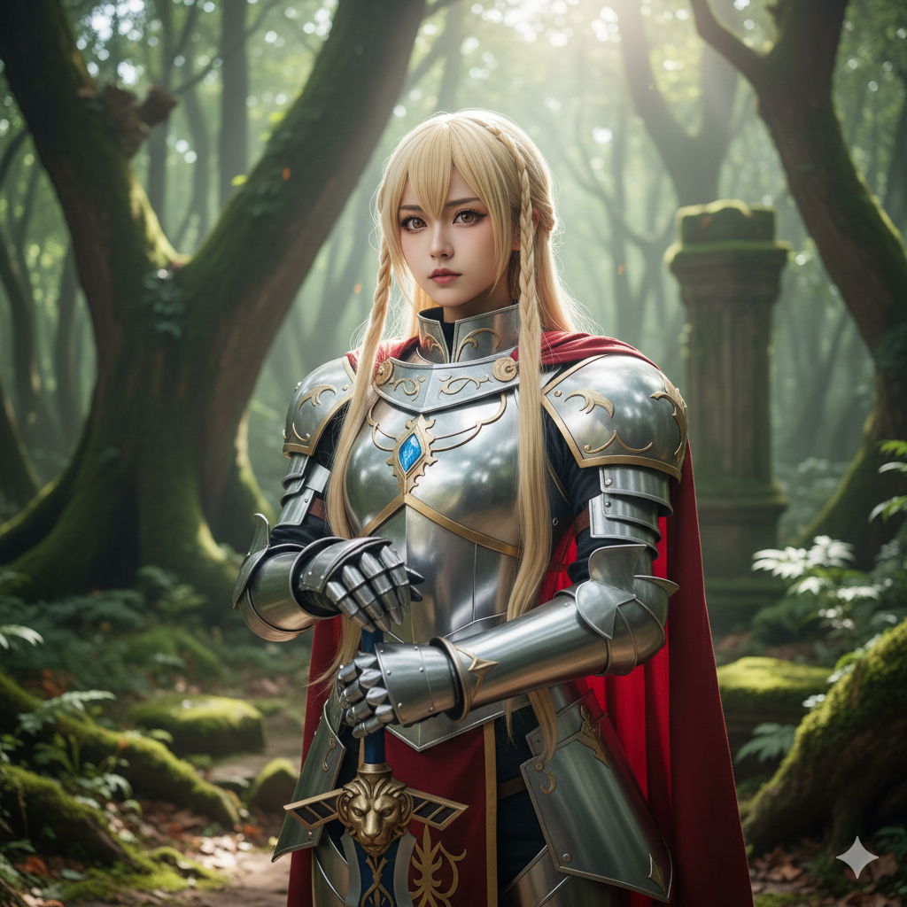
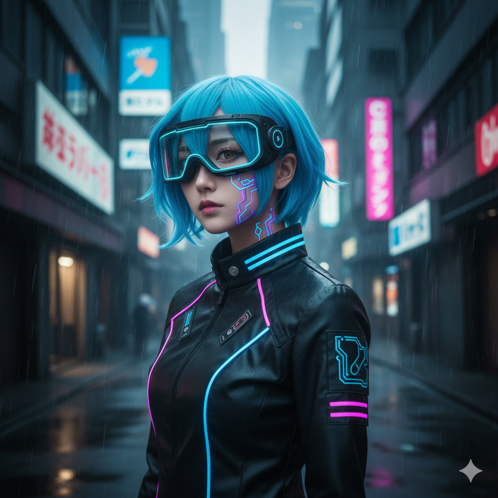
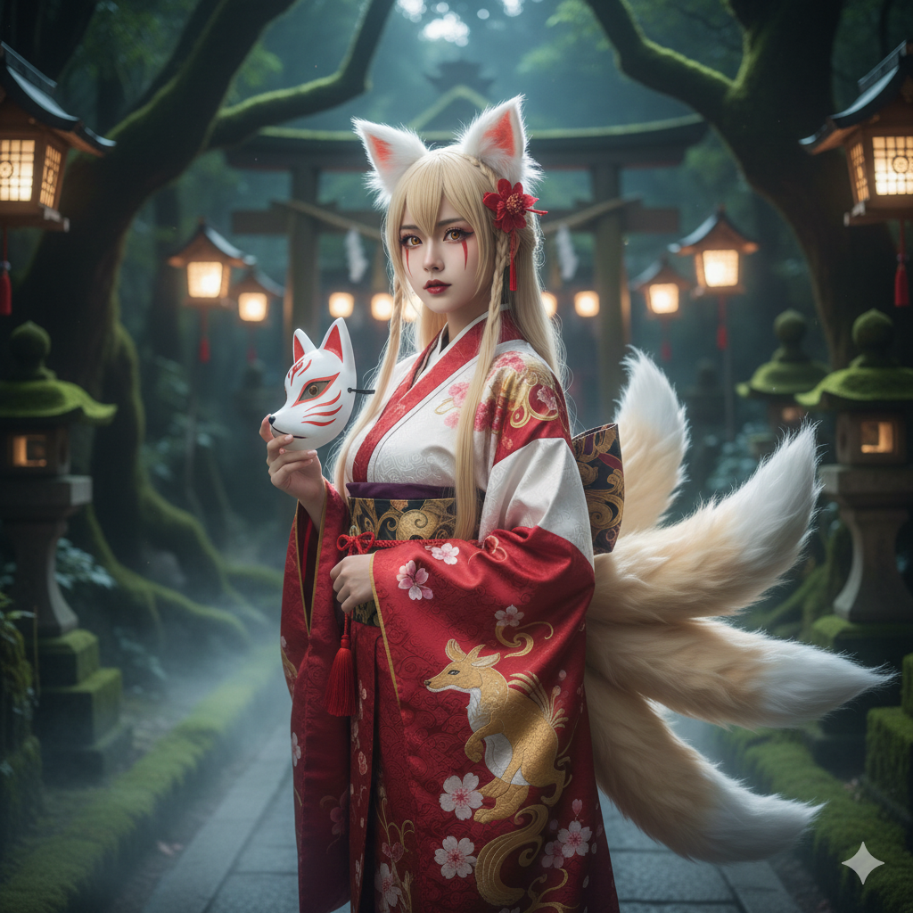

SNSフォロワー急増中のコスプレイヤー、椎名りおん。彼女の魅力は何と言っても「同一人物とは思えない」ほどの圧倒的なキャラ化能力にあります。今回は、彼女が披露した最新の3枚のポートレートと共に、そのこだわりを紐解きます。
1. 聖騎士アルトリア（幻想戦記クロニクル）
まず目を引くのは、王道ファンタジー作品の騎士コスプレ。重厚感のある鎧はすべて自作だというから驚きです。「凛とした表情を作るために、眉の角度一つにもこだわった」と語る通り、彼女の持つ気高さが存分に発揮されています。
2. 電脳ハッカー・レイ（NEO-TOKYO 2099）
一転して、ネオンが輝くサイバーパンクな世界観へ。先ほどの騎士とは打って変わって、虚無感を感じさせるアンニュイな表情が印象的です。ウィッグのカットラインや、肌に施された電子回路風のペイントが、近未来の退廃的な雰囲気を完璧に再現しています。
3. 妖狐・葛の葉（あやかし奇譚）
最後は和風ホラーな妖狐の姿。妖艶さと恐ろしさが同居するこの一枚では、カラーコンタクトとメイクで「人ならざる者」の質感を演出しています。「キャラのバックボーンを理解して、視線の配り方を変えている」という彼女のプロ根性が垣間見える一枚です。
Profile: 椎名りおん (Rio-n)
都内を中心に活動するコスプレイヤー。衣装製作、メイク、レタッチまで全てをセルフプロデュース。好きな食べ物は激辛ラーメン。座右の銘は「推しへの敬意を形に」。